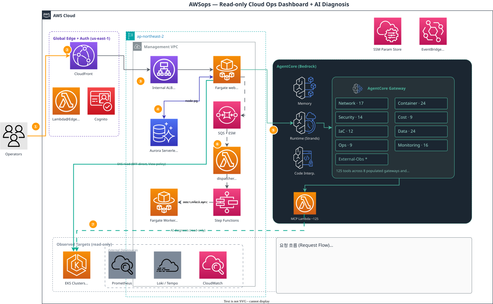

01
실시간 단일 가시성
EC2 · Lambda · ECS · EKS · VPC · RDS … 43개 화면과 React Flow 토폴로지 맵. 멀티 계정을 합쳐 보거나 전환하며 라이브 차트로 본다.
AWS와 Kubernetes를 실시간으로 모니터링하고, Amazon Bedrock AgentCore가 라이브 데이터를 근거로 진단합니다. 43개 운영 화면, 125개 AI 도구 — 변경 없는 안전한 관측.
장애 하나에 EC2·EKS·CloudWatch·Cost Explorer 콘솔을 넘나들고, 컨텍스트 전환에 초동 대응 시간을 흘려보냅니다. AWSops는 이 흩어진 화면들을 하나로 모으고, AI가 라이브 데이터를 근거로 먼저 짚어 줍니다 — 실시간 가시성 · AI 진단 · 비용·컴플라이언스 세 축으로.
EC2 · Lambda · ECS · EKS · VPC · RDS … 43개 화면과 React Flow 토폴로지 맵. 멀티 계정을 합쳐 보거나 전환하며 라이브 차트로 본다.
질문을 분류기가 1~3개 게이트웨이로 병렬 라우팅해 종합. SSE 스트리밍, Python Code Interpreter, 대화 기록, 15개 섹션 Bedrock 리포트.
Cost Explorer · 컨테이너 비용(Fargate·EKS OpenCost) · 인벤토리 추세. CIS v1.5–v4.0 400+ 제어를 Powerpipe로 점검.
모니터링부터 트러블슈팅, 비용, 컴플라이언스, 외부 관측성, AI 진단까지 — 하나의 BFF 위에서 동작합니다.
EC2·Lambda·ECS/ECR·EKS(파드/노드/디플로이/서비스)·VPC·CloudFront·WAF·EBS·S3·RDS·DynamoDB·MSK·OpenSearch를 라이브 차트로.
43 pages · React Flow 토폴로지하이브리드 라우팅(정규식 fast-path + Haiku 분류기 + 프롬프트 캐싱)으로 적합한 게이트웨이에 병렬 질의 후 답을 합성.
SSE · Code Interpreter · 스레드 영속여러 계정을 전환하거나 통합해 조회. 인벤토리는 플래그 게이트형 동기화로 Aurora에 적재 — 설정만 바꾸면 코드 변경 없이 확장.
계정 전환 · 통합 뷰Powerpipe 벤치마크로 CIS v1.5–v4.0, 400+ 제어를 점검하고 위반 항목을 한눈에 추적.
CIS v1.5 – v4.0Cost Explorer, 컨테이너 비용(Fargate 가격·EKS OpenCost), 리소스 인벤토리 추세 — 서비스별 드릴다운까지.
Cost Explorer · OpenCostPrometheus · Loki · Tempo · ClickHouse · Jaeger · Dynatrace · Datadog 연동. SSRF 차단 allowlist로 안전하게.
SSRF-protected allowlist15개 섹션 Bedrock 리포트(DOCX/MD/PDF), 알림 트리거 자동 진단, Slack 통지, 이벤트 대비 read-only 용량 분석. 변경은 운영자 몫.
자동 진단 · Slack · 리포트무겁거나 OOM 위험이 있는 작업은 SQS→Step Functions→Lambda/Fargate로 비동기 처리. 웹은 가볍게 유지.
SQS · Step Functions · 멱등Access Entry + AmazonEKSViewPolicy(읽기 전용)로 클러스터 등록. 노드·파드·디플로이·서비스를 BFF에서 직접 조회.
read-only · Access Entry하나의 AgentCore Runtime(Strands) 위에서 섹션 게이트웨이들이 라이브 AWS를 조회합니다. 분류기가 질문을 적합한 게이트웨이로 라우팅하고 결과를 합성합니다.
| 게이트웨이 | 대표 역량 | 도구 |
|---|---|---|
| Network | VPC · TGW · VPN · ENI · Reachability Analyzer · Flow Logs | 17 |
| Container | EKS 클러스터/노드/파드 · ECS 서비스/태스크 · Istio 메시 | 24 |
| Data | DynamoDB · RDS Data API · ElastiCache · MSK | 24 |
| Monitoring | CloudWatch 지표/알람 · Log Insights · CloudTrail | 16 |
| Security | IAM 사용자/역할/정책 · 정책 시뮬레이션 | 14 |
| IaC | CloudFormation 검증 · CDK 문서 · Terraform 모듈 | 12 |
| Cost | Cost Explorer · Pricing · Budgets · 예측 | 9 |
| Ops | AWS 문서 · CLI 실행 · Steampipe SQL | 9 |
| External-Obs 설계 | Prometheus · Loki · Tempo 등 외부 관측성 (read-only) | 설계 |
CloudFront VPC Origin → 내부 ALB → Fargate thin-BFF. 공개 ALB가 없습니다. 무거운 작업은 워커 티어로 흘러가고, AI는 AgentCore가 라이브로 조회합니다.

모바일에서는 가로 다이어그램을 세로로 회전해 보여드립니다.
AWSops는 read-only 운영 대시보드 + AI 진단입니다. mutating·자율 제어 티어는 비활성 플래그 뒤에서 프로토타이핑된 뒤 번복되었습니다 — 인프라 변경 권한은 보유하지 않습니다.
공개 ALB 없음. CloudFront VPC Origin → 내부 ALB(HTTPS) → Fargate, end-to-end TLS.
Cognito + Lambda@Edge. RS256 JWKS 서명 검증 + iss/aud/token_use + OAuth state + PKCE public client.
EKS는 AmazonEKSViewPolicy(읽기 전용). 외부 데이터소스는 SSRF allowlist로 차단.
Aurora는 KMS CMK. 마스터 시크릿은 RDS 관리. 설정은 SSM Parameter Store가 단일 진실 원천.
AWSops를 직접 둘러보거나, 우리 환경에 맞춘 데모를 받아보세요. 설치는 Terraform 한 번, 운영은 한 화면에서.